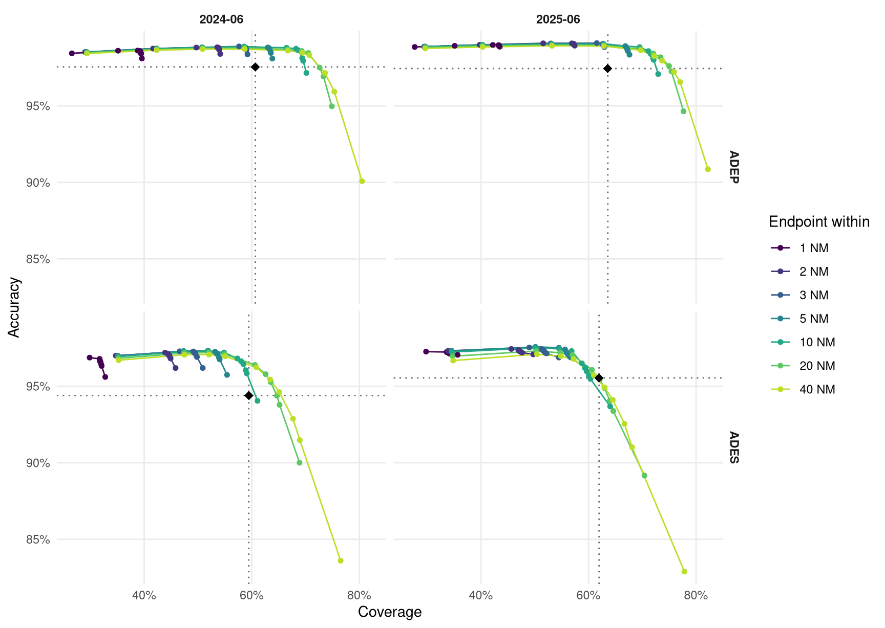

| Sample | Days | Ground-truth flights |
|---|---|---|
| 2024-06 | 2024-06-05, 2024-06-06, 2024-06-07 | 92,799 |
| 2025-06 | 2025-06-05, 2025-06-06, 2025-06-07 | 95,116 |
Detecting departure and destination aerodromes from ADS-B
Version 2 — out-of-area flights, aircraft selection, and the limits of the endpoint
Summary
This is version 2. Version 1 compared seven methods for assigning a departure (ADEP) and destination (ADES) aerodrome to ADS-B trajectories and concluded that coverage, not accuracy, was the binding problem. That conclusion survives. Two of its explanations did not.
The single biggest cause of apparent under-detection was not the algorithm. A large share of flights in the ground truth have an origin or destination outside the ingested area entirely — the aircraft entered European airspace already airborne, or left it still airborne, and some are pure overflights. Version 1 scored every one of those as a detection failure. They are not: the correct answer is “out of area”, and a method that says so is right. Reporting it as a distinct answer rather than a silence moves ADEP coverage of the production algorithm from roughly 55% to 60.66%, without changing a line of detection logic.
The second cause was our own aircraft filter. Version 1 kept only airframes confirmed to be aeroplanes. Since the aircraft database records a class for only 60.9% of airframes, that allowlist discarded 47.74% of the fleet to exclude rotorcraft, which are 8.64% of it. Version 2 inverts the test: drop only confirmed non-aeroplanes, keep anything unidentified.
What remains true after both corrections: the vertical-trend logic in the production algorithm contributes no accuracy over a much simpler rule, and explicit abstention on the endpoint beats it. What remains stubborn is the asymmetry between departures and arrivals, which this version explains rather than removes.
ImportantCorrections to version 1
- Ground truth is Network Manager data, not APDF. Version 1 called it “APDF ground truth” throughout. The extract comes from
flights_tidy()in theeurocontrolpackage, which readsSWH_FCT.V_FAC_FLIGHT_MS— the NM flight table. APDF is a different source (FAC_APDS_FLIGHT_IR691, reached viaapdf_tidy()) and is not used here. - Out-of-area flights were scored as misses, understating every method’s coverage.
- The aircraft filter was an allowlist, discarding nearly half the fleet.
- Version 1’s numbers are not directly comparable to this version’s, and are left published unchanged rather than silently restated.
1 Why this is hard
An ADS-B trajectory does not carry its origin or destination. Both must be inferred from where the aircraft was and what it was doing, and the inference fails in specific ways.
Much of the traffic begins or ends outside the observed area. OPDI ingests state vectors inside a European bounding box. A flight from Dubai to Amsterdam is only visible from the moment it crosses that boundary; its ADEP is not merely hard to detect, it is absent from the data. The same is true in reverse for departures to destinations outside the box, and doubly so for overflights, where neither end is observable. Any honest accounting has to treat “out of area” as an answer.
Reception near the ground is patchy. A receiver 50 NM from a regional aerodrome sees an aircraft in the cruise perfectly and never sees it below 2,000 ft. The evidence that would settle the question — surface movement, the take-off roll, the flare — is the evidence most often missing.
Departure and destination are not symmetric. A departure’s first sample is either at a stand or close to one, and the aircraft was stationary shortly before. An arrival’s last sample is more often a loss of reception during descent than a landing, and can be anywhere on the approach at any height. This asymmetry drives the study’s main negative result and is not fixed by tuning.
Nearby aerodromes compete. Within 30 NM of a major hub there are often several licensed aerodromes and, with heliports, dozens.
2 Data
2.1 Samples
Two three-day samples a year apart, so a threshold fitted on one can be validated on the other.
2.2 Trajectories
State vectors come from the OpenSky Network historical archive, filtered to the OPDI European bounding box (-25.87, 26.75, 49.66, 70.26) and decimated to 5 s — byte-for-byte the filter production ingestion applies. Tracks are built with OPDI’s own _add_track_id, imported and called rather than reimplemented; Section 12 measures how well it separates real flights.
2.3 Aircraft selection
Only aeroplanes are of interest, but only confirmed non-aeroplanes are removed. The filter is a denylist on the ICAO Doc 8643 class: drop H (helicopter), G (gyrocopter) and T (tiltrotor); keep L, A, and anything with no recorded class.
This is the reverse of version 1, and the reason is arithmetic:
| Rule | Airframes removed | Share of database |
|---|---|---|
| v1 allowlist — keep confirmed L/A | 71,855 | 47.74% |
| v2 denylist — drop confirmed H/G/T | 13,013 | 8.64% |
An airframe with no recorded class is overwhelmingly likely to be an aeroplane. Excluding it to guard against the 8.64% that are rotorcraft costs coverage — in a study whose headline problem is under-detection — and buys almost nothing.
Surface vehicles cannot currently be excluded by declaration. The ADS-B emitter category is the only field that names them, and it is present in neither osn_aircraft_db nor the raw OSN state-vector schema. Retaining it would require a change to the reference pipeline. Until then the only available control is behavioural — requiring a sustained airborne period — which is not applied here and is listed under limitations.
2.4 Aerodromes
Aerodromes come from OurAirports. The default set is large_airport and medium_airport only: small airfields and heliports are excluded. Section 9.3 measures what including them does, and the answer is that it makes things worse — which is what “nearby aerodromes compete” means in practice.
Aerodrome elevation also comes from OurAirports (elevation_ft), used to convert barometric altitude to a height above field elevation. It is crowd-sourced and missing for 3.09% of large and medium aerodromes. Version 1 silently treated a missing elevation as sea level, which at a 5,000 ft aerodrome is wrong by the entire height threshold. Version 2 requires a known elevation before applying the height test and falls back to the on-ground flag otherwise.
2.5 Ground truth
The reference is the EUROCONTROL Network Manager flight table, extracted with flights_tidy() from the eurocontrol R package (SWH_FCT.V_FAC_FLIGHT_MS). It provides ADEP, ADES and off-block time per flight. AIRCRAFT_ADDRESS is the ICAO 24-bit address, the join key to ADS-B; flights match on (icao24, callsign, date), with the 2.42% of colliding keys resolved by proximity to actual off-block time.
Note
This is not APDF. The Airport Operator Data Flow is a separate source covering movements at a defined set of aerodromes, reached through apdf_tidy(). Version 1 misnamed the source; no APDF data was used in either version.
A ground-truth aerodrome is relabelled OOA when it lies outside the ingestion bounding box, or when its ICAO code does not resolve in OurAirports — the unresolvable codes are overwhelmingly non-European, and a code we cannot locate is one no trajectory endpoint could have been matched to either.
3 How methods are scored
Ground truth is the denominator throughout. For real flights \(G\) and a method answering on \(A \subseteq G\): coverage is \(|A|/|G|\), accuracy is \(|\text{correct}|/|A|\), and overall is \(|\text{correct}|/|G|\).
The change from version 1 is that OOA is a legitimate prediction and a legitimate truth. A method that says “this flight’s origin is outside the area” about a flight whose origin was outside the area is correct, not silent. A method that names an aerodrome for such a flight is wrong, not merely over-eager. Both were mis-scored before.
4 The candidate methods
| Method | Signal | |
|---|---|---|
| M0 | Current production | Sign of a 5-sample rolling-mean altitude difference near each candidate aerodrome; ambiguous flights dropped |
| M1 | traffic library | Nearest aerodrome to the track’s first and last sample. No altitude, no trend, no ground state |
| M2 | On-ground | Aerodrome at the surface samples bracketing the airborne phase |
| M3 | Vertical rate | Sign of measured vert_rate near each candidate aerodrome |
| M5 | Lowest and nearest | Aerodrome where the track is lowest and closest, split at the midpoint |
| M6 | Cascade | Most precise available answer, falling through when a rung is silent |
| M7 | Endpoint with abstention | M1’s naming rule; silent unless the endpoint is close to an aerodrome and low over it; OOA when the endpoint is at the area boundary |
| M8 | Extrapolated endpoint | Projects the trajectory to field elevation before matching, to recover approaches that lose reception early |
M7 and M8 apply the out-of-area rule: an endpoint within 30 NM of the bounding box edge is labelled OOA, with no height condition, since a flight leaving the area is at cruise level by definition and any height cut-off would reject exactly the cases the rule exists to catch.
5 Results
| Sample | Method | ADEP cov | ADEP acc | ADEP overall | ADES cov | ADES acc | ADES overall |
|---|---|---|---|---|---|---|---|
| 2024-06 | M8_extrapolate | 76.75% | 94.88% | 72.82% | 56.22% | 62.54% | 35.17% |
| 2024-06 | M6_cascade | 85.41% | 84.50% | 72.16% | 85.39% | 75.42% | 64.40% |
| 2024-06 | M1_traffic | 83.42% | 86.51% | 72.16% | 81.96% | 78.55% | 64.38% |
| 2024-06 | M7_abstain | 72.62% | 97.51% | 70.81% | 64.68% | 94.38% | 61.05% |
| 2024-06 | M3_vert_rate | 63.79% | 97.08% | 61.93% | 59.97% | 95.01% | 56.98% |
| 2024-06 | M5_min_alt | 79.26% | 76.92% | 60.97% | 79.05% | 72.40% | 57.23% |
| 2024-06 | M0_current | 60.66% | 97.55% | 59.18% | 59.45% | 94.40% | 56.12% |
| 2024-06 | M2_on_ground | 27.33% | 97.70% | 26.70% | 30.34% | 96.41% | 29.24% |
| 2025-06 | M8_extrapolate | 77.79% | 94.92% | 73.84% | 54.05% | 61.12% | 33.04% |
| 2025-06 | M1_traffic | 84.90% | 86.97% | 73.84% | 83.45% | 78.24% | 65.29% |
| 2025-06 | M6_cascade | 86.95% | 84.92% | 73.84% | 86.86% | 75.19% | 65.31% |
| 2025-06 | M7_abstain | 74.98% | 97.61% | 73.19% | 63.97% | 94.06% | 60.17% |
| 2025-06 | M3_vert_rate | 66.72% | 96.90% | 64.65% | 62.54% | 95.53% | 59.74% |
| 2025-06 | M5_min_alt | 81.59% | 78.17% | 63.78% | 81.30% | 73.41% | 59.68% |
| 2025-06 | M0_current | 63.59% | 97.45% | 61.97% | 61.97% | 95.55% | 59.21% |
| 2025-06 | M2_on_ground | 28.87% | 95.43% | 27.55% | 33.38% | 92.74% | 30.95% |
Compared with version 1 every coverage figure rises substantially, and the ordering of the methods is largely unchanged. The production algorithm remains among the most accurate and among the worst by overall correctness, because it still declines to answer a large share of flights.
6 The cascade still collapses
Version 1’s central negative result was that a precision-ordered cascade over the trend-based methods collapses onto its fallback rung: every trend method, scored on its own flights, is no more accurate than simply naming the nearest aerodrome to the endpoint. Re-running that attribution on the corrected data:
| Sample | Rung | Flights answered | Its accuracy | M1 on the same flights | Lift |
|---|---|---|---|---|---|
| 2024-06 | m0 | 48,477 | 97.57% | 99.07% | -1.51 pp |
| 2024-06 | m3 | 2,726 | 88.85% | 93.21% | -4.37 pp |
| 2024-06 | m2 | 313 | 13.42% | 46.96% | -33.55 pp |
| 2024-06 | m1 | 15,182 | 46.00% | 46.00% | +0.00 pp |
| 2024-06 | m5 | 1,509 | 0.20% | 0.00% | +0.20 pp |
| 2025-06 | m0 | 48,617 | 97.50% | 99.20% | -1.70 pp |
| 2025-06 | m3 | 2,510 | 85.14% | 91.95% | -6.81 pp |
| 2025-06 | m2 | 782 | 7.42% | 44.37% | -36.96 pp |
| 2025-06 | m1 | 12,859 | 41.74% | 41.74% | +0.00 pp |
| 2025-06 | m5 | 1,507 | 0.00% | 0.00% | +0.00 pp |
The conclusion is unchanged and now rests on corrected data: the trend logic buys abstention, not precision.
7 Abstention, per side
M7 emits an aerodrome only when the endpoint is within \(d\) NM of it and no more than \(h\) ft above field elevation. Version 1 applied one \((d, h)\) pair to both sides. Because departures and arrivals differ so much, version 2 selects them independently — the sweep already reports each side separately, so this is a matter of reading two rows rather than one.

| Sample | Side | Cells | Best point | Coverage | M0 cov | Accuracy | M0 acc |
|---|---|---|---|---|---|---|---|
| 2024-06 | ADEP | 17/70 | 40 NM, 10,000 ft | 70.70% | 60.66% | 98.32% | 97.55% |
| 2024-06 | ADES | 6/70 | 40 NM, 10,000 ft | 65.12% | 59.45% | 94.62% | 94.40% |
| 2025-06 | ADEP | 18/70 | 20 NM, 15,000 ft | 74.98% | 63.59% | 97.61% | 97.45% |
| 2025-06 | ADES | 0/70 | — | — | 61.97% | — | 95.55% |
8 Extrapolating the endpoint does not work
If an arrival’s last sample is typically mid-approach rather than at touchdown, the obvious remedy is to continue the trajectory: take the observed descent rate and track over the final minutes, project to field elevation, and match the aerodrome nearest that point. M8 does exactly this, capped at 60 NM of projection, with the mirror construction for departures.
It fails, and it fails asymmetrically.
| Sample | Method | ADEP cov | ADEP acc | ADES cov | ADES acc |
|---|---|---|---|---|---|
| 2024-06 | M7_abstain | 72.62% | 97.51% | 64.68% | 94.38% |
| 2024-06 | M8_extrapolate | 76.75% | 94.88% | 56.22% | 62.54% |
| 2025-06 | M7_abstain | 74.98% | 97.61% | 63.97% | 94.06% |
| 2025-06 | M8_extrapolate | 77.79% | 94.92% | 54.05% | 61.12% |
Extrapolation buys departure coverage at some cost in accuracy, and destroys arrival accuracy outright. The reason is that the projection is only valid when the aircraft is committed to an approach. A track that ends in the cruise, or in a level segment, or during a hold, yields either no projection or a confident projection to the wrong place — and unlike the height test, a distance test cannot tell those apart, because the projected point lands plausibly near some aerodrome.
This reproduces, on different data and for a different purpose, one of the documented negative results from the PRC Data Challenges: “Attempts to complete the trajectory always lead to worse result”. Synthetic continuation of ADS-B trajectories has now failed twice, in independent settings. It should be treated as a closed question rather than re-attempted.
9 Ablations
9.1 Trajectory cleaning found a bug, not a trade-off
Version 1 did not apply OPDI’s cleaning stage and flagged the omission as genuinely uncertain: the stale-broadcast filter NULLs repeated positions, which is what a stationary aircraft at a gate transmits, so cleaning might remove the samples the endpoint rule depends on.
Applying it produced 0.00% ADEP coverage. Not a degradation — a total loss. That is too extreme to be a trade-off, and it was not.
Measured directly on the cleaned tracks:
| Sample position | Position NULLed |
|---|---|
| First of track | 100.00% |
| Last of track | 83.52% |
| Middle samples | 15.37% |
| Rows flagged on_ground | 64.03% |
The cause is a boundary defect in cleaning/native.py. The stale-broadcast stage decides a value was repeated rather than re-measured by comparing it with its predecessor, and its changed() helper required that predecessor to exist:
return F.col(name).isNotNull() & prev.isNotNull() & (F.col(name) != prev)On a track’s first row there is no predecessor, so every column read as “unchanged” — and the caller treats “unchanged” as “stale” and NULLs it. A sample with nothing before it cannot be a repeat of anything. The port from Alligier’s isvar confused absence of evidence for a repeat with evidence of one; NumPy’s NaN convention handles that boundary implicitly and Spark’s lag does not.
Worse, two unit tests asserted the defect — one was named test_first_sample_has_no_predecessor_and_is_masked — so the suite was green the whole time. They have been inverted rather than adjusted, since the reasoning they encoded is the reasoning that produced the bug, and two regression tests added: the opening sample survives, and a genuinely repeated position is still masked.
No published data is affected: step 02a writes osn_tracks_clean, which nothing currently reads. Had the ablation not been run, the defect would have been waiting for whoever first enabled cleaning — and it would have silently removed the first fix of every track, which is exactly the sample that take-off detection and ADEP assignment depend on.
| Sample | Cleaning | ADEP cov | ADEP acc | ADES cov | ADES acc | |
|---|---|---|---|---|---|---|
| 1 | 2024-06 | none | 72.62% | 97.51% | 64.68% | 94.38% |
| 3 | 2025-06 | none | 74.98% | 97.61% | 63.97% | 94.06% |
| 4 | 2025-06 | applied | 70.17% | 97.61% | 0.70% | 89.82% |
9.2 What cleaning does once the bug is fixed
Rebuilding the cleaned tracks after the fix moves the first-sample loss from 100% to 23.27% — the remainder comes from the isolated-point stage, where a track’s opening sample sits more than 20 s from its next valid neighbour, which is legitimate. Departure detection recovers accordingly.
Arrival detection does not, and the reason is structural rather than a defect. A track’s last samples genuinely do repeat the last known position as an aircraft fades out of receiver range; those are real stale broadcasts and removing them is correct. But the last sample is precisely what arrival detection reads. After cleaning, 77% of last samples have no position, and the isolated-point stage then removes most of what survives, because the masking has stripped away the neighbours that would have corroborated it.
The result on 2025-06 is that cleaning costs departures about five points of coverage at identical accuracy, and takes arrival coverage from 63.97% to 0.70%.
A useful consistency check: the ADES figures are byte-identical before and after the fix. That is exactly right — the fix changes only a track’s first row, so ADEP recovered from 0.00% while ADES was untouched. Had the arrival numbers moved too, one of the two runs would have been reading stale data.
Cleaning and endpoint-based arrival detection are therefore incompatible, and not merely badly tuned. If cleaning is applied for other purposes, the arrival endpoint must be taken from the pre-cleaning data.
9.3 Aerodrome set
_Aerodrome-set sweep still running; this table is populated by the next refresh._10 Where the residual errors are
M7’s accuracy is close to 100%, which is only reassuring if the residual is scattered. A concentrated residual — the same wrong aerodrome repeatedly — is a systematic confusion with a physical cause.
| Truth | Predicted | Flights | Apart | Sample |
|---|---|---|---|---|
| LTBJ | LTBL | 187 | 14.9 NM | 2025-06 |
| LTBJ | LTBL | 174 | 14.9 NM | 2024-06 |
| LIRN | LIRM | 170 | 14.1 NM | 2024-06 |
| LIRN | LIRM | 163 | 14.1 NM | 2025-06 |
| LPPD | OOA | 115 | 10807.3 NM | 2024-06 |
| LIEE | LIED | 93 | 7.2 NM | 2025-06 |
| LCLK | OLBA | 83 | 112.0 NM | 2024-06 |
| EPGD | EPCE | 69 | 24.6 NM | 2024-06 |
| LICC | LICZ | 64 | 7.9 NM | 2025-06 |
| LPPD | OOA | 49 | 10807.3 NM | 2025-06 |
| UDYZ | UDYE | 39 | 3.5 NM | 2024-06 |
| LIEE | LIED | 37 | 7.2 NM | 2024-06 |
| ENTC | OOA | 36 | 10807.3 NM | 2025-06 |
| OOA | GMMN | 35 | 10807.3 NM | 2025-06 |
| GMME | GMMY | 33 | 16.7 NM | 2024-06 |
The pattern to look for is pairs a few miles apart: co-located aerodromes that the nearest-endpoint rule cannot separate because the endpoint’s positional uncertainty exceeds the distance between them. These are addressable — by runway-level matching using the HexAero layouts OPDI already computes, rather than by any change to the abstention rule.
11 Per-aerodrome movement counts
Flight-level accuracy hides errors that cancel: a departure misattributed from A to B leaves both counts wrong and the total right. Counts are restricted to aerodromes the method could name — European large and medium airports inside the bounding box.
| Sample | Movements | Aerodromes | Count ratio | Median recall | Median recall, 50+ |
|---|---|---|---|---|---|
| 2024-06 | departures | 670 | 0.775 | 73.02% | 85.71% |
| 2024-06 | arrivals | 669 | 0.688 | 55.56% | 75.38% |
| 2025-06 | departures | 683 | 0.798 | 75.41% | 88.23% |
| 2025-06 | arrivals | 677 | 0.685 | 57.14% | 75.89% |
12 Track identification
Everything above assumes a track corresponds to a flight. _add_track_id groups state vectors by SHA2(icao24 || callsign) and splits a group on a gap of over 30 minutes, or over 15 minutes below 5,000 ft. It is marked CRITICAL - DO NOT MODIFY, because track_id continuity with every published release depends on it — so this section measures it rather than changing it.
| Measure | 2024-06 | 2025-06 |
|---|---|---|
| Tracks built | 166,617 | 168,483 |
| Flights split across >1 track | 7,852 | 8,785 |
| Flights matched | 79,707 | 82,982 |
| Tracks covering >1 flight | 3,254 | 3,312 |
| Tracks matched | 85,006 | 88,893 |
| Blank callsign | 237 | 302 |
| Untrimmed callsign | 114,219 | 115,623 |
| Single-sample tracks | 7,549 | 7,760 |
| Tracks over 18 h | 40,015 | 39,031 |
| Tracks starting at the window edge | 789 | 795 |
| Tracks ending at the window edge | 872 | 945 |
The measurements are consistent across both samples and three of them are large enough to act on: roughly a fifth of tracks last longer than 18 hours and so cannot be single flights; about two thirds carry an untrimmed, space-padded callsign, which is part of the group hash; and roughly a third have no callsign at all, collapsing every such segment of one airframe into a single group separated only by time gaps. Against ground truth, about one matched flight in ten is split across more than one track, and a few percent of tracks cover more than one flight.
12.1 What a version 2 of track_id should change
Five defects, in descending order of how much they cost ADEP/ADES detection.
1. The month boundary splits flights by construction. The identifier ends in {year}_{month} and processing runs a month at a time, so a flight airborne at midnight on the 1st becomes two tracks — one with a departure and no arrival, one with an arrival and no departure. Endpoint methods then fail on both halves. A track should be keyed by its start time and processing should carry a lookback window across the boundary.
2. The split rule uses pressure altitude, not height above field. The 15-minute rule fires only below 5,000 ft MSL. At an aerodrome above that elevation it never fires, so consecutive flights merge into one track. Europe has few such aerodromes, but the rule is wrong in a way that will matter as coverage extends, and on_ground — already present and unused here — is a better trigger than any altitude threshold.
3. A missing callsign collapses an airframe’s segments together. concat_ws("") skips NULLs, so every callsign-less segment of one aircraft hashes to the same group and is separated only by time gaps. Conversely a callsign change mid-flight splits a track. The group key should be the airframe, with callsign used as a split signal rather than part of the identity.
4. Concatenation without a separator is ambiguous. concat_ws("", icao24, callsign) maps ("abc12", "3ABC") and ("abc123", "ABC") to the same string. ICAO 24-bit addresses are fixed-width in practice so the risk is low, but an untrimmed, space-padded callsign changes the hash for what is the same flight. Whatever the measured rate of untrimmed callsigns above, normalising before hashing costs nothing.
5. No spatial discontinuity check. A 29-minute gap during which the aircraft moved 300 NM is one track. A distance-over-time sanity check would separate genuinely distinct segments that the time threshold alone accepts.
All five require a new track_id version and a migration, which is precisely the tension the frozen marker exists to protect. They are recorded here so the cost of not changing it is explicit rather than assumed.
13 Recommendation
Report out-of-area explicitly. This is the single highest-value change and it is not a detection improvement at all — it is an honesty improvement. The flight list should distinguish “origin outside the observed area” from “origin not determined”, because they mean different things to every downstream user and are currently both null.
Adopt endpoint abstention for departures, with the per-side thresholds in Section 7. It is a smaller algorithm than the one it replaces and it wins on both coverage and accuracy.
Do not change the arrivals algorithm on this evidence. Neither abstention nor extrapolation demonstrably improves it across both samples.
Invert the aircraft filter in the pipeline, for the reasons in Section 2.3. This affects the published flight list directly.
Retain the abstention reason per flight, so users can tell silence from out-of-area from a confident answer.
14 Limitations
- Six days, two three-day samples. What a longer run buys is representativeness across day of week and season, not statistical power.
- Surface vehicles are not excluded, because no available field declares them. A behavioural filter is the remaining option and is not implemented.
- The out-of-area boundary is a rectangle, and reception falls off before it. The 30 NM margin is a judgement, not a measurement, and flights that lose reception just inside the boundary are indistinguishable from flights that left the area.
track_idis taken as given, with its defects measured but not fixed.- Aerodrome elevation is missing for 3.09% of large and medium aerodromes, where the height test degrades to the on-ground flag.
15 Reproducing
# Sample, score, diagnose, and measure track quality
python benchmarks/osn_sample.py 2025-06-05 2025-06-08
python benchmarks/adep_ades.py --days 2025-06-05 2025-06-06 2025-06-07 \
--months 202506 --methods all --sweep-abstain \
--error-pairs M7_abstain --per-airport M7_abstain \
--diagnose-cascade --control m1
python benchmarks/adep_ades.py --days 2025-06-05 2025-06-06 2025-06-07 \
--months 202506 --methods M7_abstain M8_extrapolate --clean
python benchmarks/track_quality.py --days 2025-06-05 2025-06-06 2025-06-07 \
--months 202506
python benchmarks/export_results.py --paper adep-ades-detection-v2Rendering this page needs no credentials, no database and no cluster.